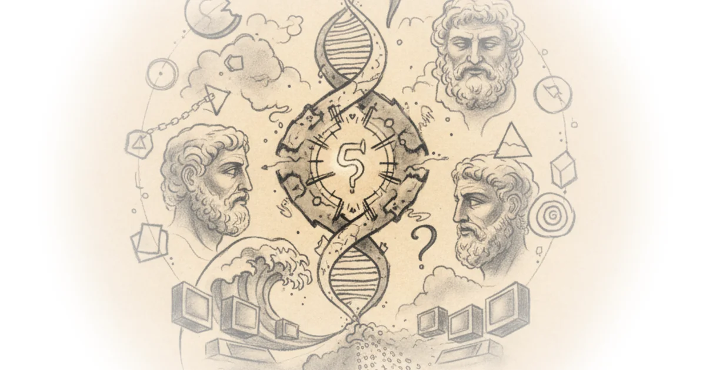

Derek Muller takes a problem that's puzzled mathematicians for over 2,000 years and makes it accessible. The oldest unsolved math problem isn't some abstract conjecture — it's the question of whether any odd perfect numbers exist. What makes this piece work is how Muller traces that single question through centuries of failed attempts, false conjectures, and unexpected breakthroughs.
The Simple Question That Baffled Mathematicians
Muller opens with a definition that's almost playful: "take the number six for example you can divide it by 1, 2, 3 and six but let's ignore six because that's the number itself and now we're left with just the proper divisors." He's describing perfect numbers — where all your proper divisors add up to the number itself. It's a simple concept, almost elegant, which is exactly why this problem has captured so many minds. The question at the heart of the piece is deceptively straightforward: "do any odd perfect numbers exist" — three words that represent millennia of mathematical frustration.

A Pattern Written in Binary
Muller finds something genuinely beautiful in how these numbers behave. He points out that when you write them in binary, "they are all just consecutive powers of two" — a pattern that emerges almost like hidden writing on the page. The perfect numbers 6, 28, 496, and 8,128 each reveal something about their nature through this lens: they become strings of ones followed by zeros. This is where the piece gets genuinely evocative; Muller writes about these numbers as if they were messages waiting to be decoded.
Euclid's Formula and Its Limitations
The ancient Greeks discovered what they believed was a complete picture — and Muller walks through Euclid's formula for generating even perfect numbers. The method involves taking sums of consecutive powers of two, multiplying by two raised to an odd prime power, whenever this is prime. It's a beautiful system, but as Muller notes, "Euclid had found a way to generate even perfect numbers but he didn't prove that this was the only way" — meaning there could be other paths to perfection, potentially including odd ones.
The centuries that follow become a story of false hope and quiet desperation. Muller recounts how Nicholas of Cusanus in the 1500s "stated five conjectures" about perfect numbers — all considered facts without actual proof. Two were quickly disproved by later mathematicians: the fifth perfect number being eight digits long contradicts the first conjecture, while the sixth and seventh ending in six disproves the alternating pattern.
Euler's Breakthrough and Its Limits
The piece centers heavily on Leonard Euler, who "picked up where Descartes had left off but with more success" — a statement that undersells what Euler actually achieved. His three breakthroughs include discovering the eighth perfect number by verifying 2^31-1 is prime, proving every even perfect number has Euclid's form, and showing an odd perfect number must satisfy a specific condition: exactly one prime raised to an odd power while all others are raised to even powers.
But Muller captures something poignant about Euler's legacy. After his third breakthrough, "Euler couldn't prove whether they existed or not" — so he wrote simply: "whether there are any odd perfect numbers is a most difficult question" for the next 150 years. The phrase carries weight; it's the sound of a great mind admitting defeat on an apparently simple problem.
The search continued with Mersenne primes, and Muller documents how computers transformed the hunt. By 1952, only twelve Mersenne primes had been discovered — representing just twelve perfect numbers after two millennia of searching. The difficulty wasn't lack of interest but rather that "checking whether large Mersenne numbers were actually Prime" became computationally overwhelming.
Counterarguments Worth Considering
A critic might point out that the piece leans heavily on historical narrative without fully explaining why mathematicians care about this problem — what does it actually matter if odd perfect numbers exist? The answer lies partially in number theory's tendency to find unexpected connections between seemingly unrelated problems, but Muller doesn't explicitly state this. Additionally, while Mersenne primes are central to finding even perfect numbers, the piece doesn't discuss whether odd ones would follow any similar pattern.
Do any odd perfect numbers exist?
Bottom Line
The strongest element here is how Muller transforms an ancient mathematical puzzle into a human story — showing not just what mathematicians found but how they failed, what they believed, and where hope remained. The biggest vulnerability is the lack of explicit explanation for why this problem matters beyond historical curiosity; readers unfamiliar with number theory might wonder what all the fuss is about. Watch for coverage of whether computational approaches like the Great Internet Mersenne Prime Search will eventually settle this question — or whether proof-based mathematical reasoning will crack it first.